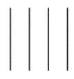

Беседа 3407 от 3877 · Беинса Дуно
Добро, справедливо, разумно
„Отче наш“
Имате ли тема? (Имаме темата „Здрав, без да е болен“.)
Каква е разликата между болест и здраве? Конкретно по какво се отличава болестта и по какво се отличава здравето? С какви качества се отличава здравето? Какви качества има здравият човек на физическото поле и болният какви качества има? Те са почти синоними. Кои думи са синоними? Кои думи са синоними на здравето и кои думи са синоними на болестта? Не се спъвайте. Често вие си туряте прегради. Турите една преграда пред себе си. Ако турите една преграда на два или четири пръста пред себе си, какво ще направи тази преграда? Ще затули вашия хоризонт. Тази преграда, колкото се отдалечава, какво ще направи? Ако тия прегради се отмахнат, какво ще стане? Просторът на вашето зрение ще се увеличи.

Богатия може да вземем, че е здрав, а сиромаха може да вземем, че е болен. На аналогията тук липсва нещо, но и обратното може да бъде. Сиромахът, който е болен – тогава болният може да бъде по-силен от здравия. Аналогически на сиромаха му липсва нещо, но сиромахът е по-силен. Здравият работи. Богатият е по-неподвижен. Онзи, който не разбира закона на аналогиите, ще се спъне. Но защо именно богатият е по-неподвижен? Защото е натоварен. Защото, ако вие не сте натоварени, вие ще ходите бързо, но ако сте натоварени – имате на гърба си десетина кила – ще може ли да бързате? Вървите полекичка, бавно пристъпвате.
Кой е богат, болният ли е богат, или здравият е богат? Тогава болният е богат, защото болният има нещо повече от здравия. Какво има болният повече? От какво са произлезли болестите? В него има повече топлина, всякога болният има температура. Здравият има по-малко топлина, в здравия има повече студенина. На болния като пипнете пулса, особено бие, има повече топлина. Като се измерва температурата на болния човек, има винаги повече топлина. Здравият има по-малко топлина, повече топлина има болният. Богатият има повече пари, сиромахът има по-малко пари. Температурата на болния човек е неговото богатство.
Сега вие на болестта давате съвсем друго значение. Болестта произтича от някакви вътрешни нарушения. Може болката да е обща за цялото тяло, пък може да е само на един орган. Оттам може да извадите един закон, че когато страда един орган в тялото, произвежда безпокойство на цялото тяло. Да кажем, боли ви малкият пръст на крака ви. Вие не обръщате внимание, но неговата болка ще се отрази върху цялото тяло. Тогава в здравословно отношение всичките удове трябва да бъдат здрави, нито един уд не трябва да бъде притеснен. Щом има притеснително състояние на един уд – отразява се върху цялото тяло. Боли ви окото – малко болест, но ще се отрази върху тялото ви. Или боли ви ухото – тази болка ще се отрази на целия ви ум, той е неспокоен.
По този закон на аналогичните разсъждения човек трябва да пази една вътрешна хармония. Запример, ако имате една болка, вие ще бъдете неразположен, мисълта ви няма да бъде ясна. Да кажем, ако имате една болка на крака си, вие не може да бъдете весел, не може да се усмихвате, не може да бъдете разположен. Ако кракът ви боли, ако някой иска да му направите услуга, вие не сте готов. Казвате: „Не съм разположен, боли ме кракът.“ Казват ви: „Не му обръщайте внимание.“ Като не му обръщате внимание, ще може ли да му услужите? Речете да тръгнете – боли ви кракът. Направите усилие – не може да премахнете препятствието.
Та казвам, по кой начин човек може да се справи с една болка? Да допуснем, че причините на болката са външни – вървели сте боси, някой трън влязъл в крака ви. Доста дебели тръне има. Вървите, боли ви кракът. Вие чакате да мине болката. Този трън докато е в крака ви, болката няма да мине. Какво трябва да направите? Трябва да впрегнете ума си на работа, да отмахнете причината на болката. Ако го извадите, болката ще мине. Ако не, ще мине дълго време. Добре, така е, ако е един трън. Но представете си, че сте яли една храна, която е мъчно смилаема. Пак се образува едно болезнено състояние. Тогава тази храна пак трябва да се изхвърли из тялото навън. За това лекарите имат разни средства. Трябва да се пречисти стомахът, трябва да се пречисти организмът, правят се водни промивки, да се прочисти стомахът от нечистотиите. По този закон може да влезе едно чувство, една мисъл, които са мъчно смилаеми.
Ние трябва да вървим по закона на аналогиите, разсъждаваме. Вие може да имате най-хубавата храна, която може да ви причини болка – нездравословна е. Пък може храната да е нездравословна, и да не ви причини болка. Ако имате най-хубавата храна, то тя може да ви причини болка. В първия случай, ако храната е лоша, и да я сдъвчете, тя пак ще ви причини болка. Във втория случай, ако хубавата храна не сдъвчете, тя ще ви причини болка. Но когато храната е добра, причината на болката е, че вие не сте сдъвкали добре храната. Ако сдъвчете тази храна, няма да ви причини болка. Във втория случай, ако храната е лоша, тогава ще ви кажа, че тази храна не [е] трябвало да я приемате, тази храна не трябва да я приближавате до устата си, отвън трябва да я държите.
Сега по този закон на сравненията, често се раждат в живота противоречия от добрите причини. И от лошите причини се раждат лоши последствия. Тогава, когато имаме едно лошо последствие от една добра причина, ние казваме: „Сдъвчи храната си добре.“ А пък когато имаме едно лошо последствие от една лоша причина, казваме: „Не възприемай храната.“ Някой път има мисли, които трябва да се сдъвчат. Има някои мисли, които не трябва да се възприемат. Погрешката е там, че някои мислят, че са много силни – възприемат лошата храна. Казва: „Много добре е сготвена тази храна.“ Храната може да е много добре сготвена, но не подхожда на тялото.
Следователно във всеки даден случай имаме аналогични разсъждения. Вие сте слаб човек, и се пънкате да вдигнете тежък товар. Не сте готови. Този тежкият товар може да ви причини пакост, може да си осакатите ръцете, пък може да се напъвате [и] да се изсипете. У българите има много хора, които са изсипани, понеже едно време правеха големи снопове. Ако са малки сноповете, лесно се дигат, но те ги правеха големи, за да плащат по-малко. Като ги дигат, изсипват се. Когато хората са користолюбиви, искат много да спечелят, тогава се изсипват. Искате вие да спечелите много пари, ще се изсипете. Вие с едно тънко въже може да дигнете един тежък товар, но като речете да го дигнете, скъса се въжето. Тогава ще ви причини вреда. Или пък тънкото въже не издържа на онзи вътрешен напор – като го теглите, ще се скъса.
Тогава от тия примери хората са извадили морални изводи. Имаш една слаба мисъл, от нея какво можеш да свършиш? Да допуснем, че някой казва: „Говори сладко.“ Със сладкото говорене много работи може да се свършат. Но има работи, със сладко говорене не може да се свършат. Прати те човекът на лозето. Сладко говориш, но не копаеш. Сладко говориш, казваш: „Ще изкопаем.“, разправяш това-онова, но не копаеш. Ти ще си причиниш неприятност. Сладкото говорене е добрата храна, но влиза несдъвкана в стомаха – ще ти причини болка. Този човек ще ти каже думи, които не си слушал. Какво ще ти каже? Ти цял месец си го залъгвал със сладко говорене, нищо не си свършил. Колко зоологически имена ще ви тури – трябва да бъдеш ясновидец, доста сложна наука е.
Допуснете, че вие имате един приятел или че някои от вас имате приятелка. Вие сте говорили много сладко. Ако я обидите, какво ще ви каже? Ако един път я обидите, ще ви каже едно. Ако я обидите втори път, ще ви каже второ, трето, четвърто. Във възходяща степен ще бъде обидата. Първото нещо, какво ще ви каже? Представете си, че вие постъпвате физически – ударите ѝ една плесница, на вашата приятелка. Ако тя е силна като вас и ако е честолюбива, веднага ще ви ушие друга плесница. Ако е страхлива, осторожна, благоразумна, като я плеснете, само ще си набръчка челото и лицето, ще каже: „Добре, ще имам предвид.“ Ако е честолюбива, хич нищо няма да ви каже, но ще ви ушие една плесница и тя. Плесница за плесница – по-лесно ще се примирите. Тя една плесница, ти една плесница – квит сте. Но ако ти ѝ удариш една плесница, и тя не ти удари, тогава работата не се свършва лесно. Тя се отдели, не ти говори, разгневи се от обидата.
Тук има учени, и по няколко месеца се гневят, не знаят как да говорят. В Америка имало един студент, който бил много любознателен. Какъвто опит прави професорът, все искал той пръв да знае. Един ден професорът искал да му даде един урок. Разтворил силен амоняк в едно шише и казва: „Искаш ли да знаеш какво има в шишето?“ Онзи си турил носа. Като поставил шишето под носа, студентът се обръща и пада на гърба си. Втори път професорът го вика, вика го, но той вече не отива. Вие правили ли сте опит със силен амоняк?
Казвам, в дадения случай е любопитство. Всяко чувство може да мине своите граници. Представете си, у вас се образува такова дисхармонично състояние – разни влияния има върху ума ви. Запример слушате, двама души се разговарят. Вие сте богат човек и те казват: „Да го оберем.“ Какво ще произведе това във вас? Допуснете, че вие сте си изкълчили крака и двамата приказват и казват: „Да можем да му направим едно добро, да намерим едно превозно средство, да го занесем в болницата.“ Какво ще се яви във вас? Едно обнадеждаване. В първия случай на кое място на главата ще се яви мисълта? Във втория случай на същото ли място ще ви се яви? Представете си, че вие сте държали изпит и двама професори се разговарят и казват, че са ви скъсали, писали ви единица. Какво се ражда във вас? Като кажат двамата професори, че ти турили единица, в тебе се заражда страх, казваш: „Скъсаха ме.“ Когато двамата говорят да те обират – пак страх се заражда.
Но какъв е страхът на ученика и какъв е страхът на богатия? Двамата професори на мястото на разбойниците – какво трябва да прави ученикът? Вие знаете какво трябва да прави. Той ще иде при тия професори да ги помоли втори път да го изпитват. Богатият какво прави, като го хванат разбойниците? Какво прави с тях? Той се мъчи да ги подкупи, да го не обират. Колко може да даде? Ако е някой умен човек, той може да ги подкупи. Ще каже: „Вие сте способни хора, аз може да ви услужа. Тия пари ще ги вземете и ще ги изядете. Ако постъпите добре с мене, аз ще ви съдействам, ще подобря вашия живот. Този занаят не струва, да се обират хората.“ Пък ако не е от разумните, тогава ще го оберат.
Разбойниците умните хора не ги обират. Имало в Ню Йорк един учен човек, който се занимавал с физика, с електричество. Имал две златни дръжки, с които правел опити. Един разбойник искал да му открадне златните дръжки. Като влиза при учения, той му дава двете дръжки, но те били свързани с електрическата машина. Той почнал да върти и ток протича. Разбойникът държи дръжките и не може да се освободи. Така ученият го развеждал из къщата, из стаите. После го развеждал и навън из улицата и като го пуща, онзи хуква да бяга. Казва му: „Още веднъж учен човек да не ходиш да обираш.“ Те са сега сравнения. Аз ви привеждам този пример. Как може да го употребите? С физика не се занимавате, такива златни дръжки нямате. Този разбойник също го няма. Аз ви привеждам този пример и вие може да го приведете на други. Но казвам, каква поука може да извадите? Казвам, този пример къде може да го приложите?
Сега често казвате, че човек трябва да бъде добър. Какво разбираме ние под думата добър? Конкретно за доброто в най-добрия смисъл на думата, какво разбирате под думата добър човек? Имате Д., С., Р.. По какво се отличават добрият, справедливият и разумният човек? Добрият, това е основата. Каква е аналогията? Какво нещо е доброто? Най-първо аналогично какво е доброто? Една основа. Туй, което е основа, е добро. Земята, понеже е основа, земята сама по себе си е добра. Върху една основа може да се подигат две стени, четири стени. Върху една основа подигате една къща, направите цяло здание. Туй е справедливостта. Справедливостта е градеж върху тази основа. В какво седи разумността? Човек, който влиза вътре в живота, той е вече разумен. Щом имаш основа, ти си добър. Щом градиш, ти си справедлив. Щом живееш в къща, ти си разумен.
Добър, справедлив и разумен показват един процес на човешкия живот. Ти не можеш да бъдеш разумен, ако не си справедлив, и не можеш да бъдеш справедлив, ако не си добър. Някой може да каже, че човек може да бъде добър, без да бъде справедлив. Това е невъзможно, те са процеси. Върху една основа може да се гради. Само разумният човек може да избере една добра основа, само разумният човек може добре да гради. Вие вземате доброто отвън, доброто не може да го разберете. Доброто не съществува вън от вас и справедливостта не съществува вън от вас, и разумността не съществува вън от вас. Разумността извън вашето съзнание е непонятна, тъй както сладчината е непонятна, докато предметът не е в съприкосновение с вашето тяло. Когато сладчината влезе в съприкосновение с един от вашите удове или с един от вашите органи, с които опитвате сладчината, вие може да познаете какво е сладчина.
Тогава как научно бихте определили сладкото и горчивото? Горчивото винаги свива нещата, сладкото винаги ги разширява. Щом вземеш нещо, което е сладко, разширяване има. Щом вземеш нещо, което е горчиво, свиване има. Сладкото придава, а горчивината отнема. Ти например, след като си внесъл нещо, което е горчиво, ще плюеш, ще плюеш. Колко пъти ще плюете, докато се отмахне горчивината. Като вкусиш нещо сладко, плюеш ли? Значи горчивото отнема нещо от тебе, а сладкото придава. Ти сладката плюнка я гълташ. Сладките плюнки гълтате, а горчивите изхвърляте. В десет плюнки ще плюеш. Щом плюеш – природата знае. Ако си изхвърлил двайсет плюнки, каква е горчивината? Ако ти само веднъж плюеш от горчивото, горчивината е малка. Ако плюеш два пъти – горчивината е по-голяма. Четири, пет, шест пъти – горчивината е още по-голяма. Двайсет плюнки ако си изхвърлил – тази горчивина е още по-голяма. Сто и двайсет плюнки… Колко енергия си иждивил да образуваш тези плюнки и да ги изхвърлиш навън? Аналогично, ако ти си взел лопатата и си изхвърлил двайсет лопати, колко енергия си изхарчил? За да изкопаеш двайсет лопати пръст и тия лопати да ги изхвърлите, колко енергия сте изхарчили?
Та казвам, умните хора са намерили и защо ви карат да работите. Защото сте яли горчиво. И тогава здравия човек, още преди да е дошло горчивото, ще го карат да работи. Защо трябва да копае? За да чисти езика си от горчивото. Ти си се разсърдил запример – eдин метод за лекуване – разсърдил си се. Ако имаш лопата, изхвърли веднъж–дваж с лопатата. Двайсет лопати като изхвърлиш, ще ти мине гневът. Ако не изхвърлиш лопатите, ще се караш с другите. Вземи лопатата и изхвърли. Казваш: „Какво искаш да кажеш, я ми кажи?“ Ти хвърляш лопатите и свършиш работата. Иначе ще идеш при приятеля си – нямаш лопата. Всеки един от вас трябва да има лопата.
Аз съм за карането, трябва да се караш, защото една бомба е опасна. Казва: „Човек трябва да се въздържа.“ Съгласен съм. Но бомбите са опасни. В една бомба енергия е набрана вътре, не я буташ. Някой дойде, ще я бутне. Някой път е хубаво отдалеч да се бута, да експлодира, да стане безопасна. Ти си набрал енергия като тази бомба, като те бутне някой, ти може да експлодираш като някоя бомба. Никой не ви бута, безопасни сте. Казва: „Той е много добър“. Казвате: „Не експлодира тази бомба.“ След като експлодира, става безопасна. Докато не е експлодирала, е опасна. Разумният човек няма да те бута там. Сега кое е по-хубаво, да бъдеш експлодирала бомба или да бъдеш неексплодирала бомба?
Ще ви приведа аналогия. Кое е по-хубаво, богат ли да бъдеш, или сиромах да бъдеш? Сега решавате да бъдете богати. Но вие минавате през една местност, дето има разбойници. Кой страда повече, бедният или богатият? Ако бедният мине през тази местност и богатият мине, страданията ще бъдат ли едни? Няма да бъдат. Бедният ще мине със скъсани дрехи – пуснат го свободно. Богатият ще мине – ще му вземат всичкото богатство. След като се срещнат богатият и сиромахът, какво ще мислят двамата? Единият ще бъде весел, пък другият ще бъде тъжен. Защо? Сега аналогично ще ви приведа. Сиромахът в този случай е радостен, че не са го обрали, няма какво да го обират. Богатият съжалява, че са го обрали. Сега представете си, че богатият е болен. В дадения случай, разбойниците, които обраха богатия, той плаче. Сега един здрав човек и един болен човек минават през болница. Здравия го изпитват дали е здрав. Той, като излезе из болницата, се измъчва. Болният, понеже бил болен и му отнемат болестта в болницата, като излезе, радва се. Здравият съжалява, че бил в болницата. Болният се радва, че бил в болницата и оздравял.
Вие сега не може да видите сложните процеси, които минават в живота ви. Радостта в едно отношение не е радост в друго отношение. Ако човек се дави в морето, ще се спаси по-лесно, ако е беден, отколкото ако е богат.
Сега трябва да се разбират аналогиите. Тук са разхвърляни нещата. Имаме три неизвестни неща. Доброто, което не е приложено, то е X, справедливостта е Y и разумността е Z. Това са три неизвестни, които трябва да се опитат и приложат, за да знаем кои са силите, които са скрити. За да функционира доброто, трябва да знаем законите на доброто, какво нещо е доброто и справедливостта трябва да разбираш и разумността трябва да разбираш. Какво е потребно на един човек, за да бъде справедлив? Най-първо, той трябва да бъде съвестен. Какъв трябва да бъде още? Той трябва да бъде смел. Какъв трябва да бъде още? Той трябва да бъде твърд. Още какъв трябва да бъде? Той трябва да бъде изпълнителен. После, трябва да бъде разумен. Те са елементи, за да бъде справедлив. Ако няма тия елементи, не може да бъде справедлив. Някой казва: „Трябва да бъда справедлив.“ Справедливостта е общо понятие. За да бъдеш справедлив, това е процес, тази справедливост трябва да я приложиш. Ти трябва да бъдеш справедлив към слугите си. Каквото направиш, трябва да бъдеш съвестен. Трябва да градиш хубаво.
Хубаво, сега на добрия какви са качествата? Той трябва да бъде търпелив. Първото нещо – на добрия човек каквото да му направят, той трябва да е невъзмутим. Сократ е бил търпелив, но добър е бил. Един ден завежда Сократ един свой приятел в дома си на гости. Жена му била много особена, най-благородната гъркиня в цяла Гърция. По говора била специалистка, голям оратор, знаела как да се кара. Като дошли двамата, започнала да се кара на двамата и да ги хука. Тя носела един леген вода и излива отгоре им. Сократ казва на приятеля си: „След буря има дъжд. Имахме една хубава баня.“ Добрият човек е търпелив човек, той е невъзмутим. Каквото да стане, той не се мести от положението. Добрият, той изчаква нещата. Може да мине година, две, три, хиляди, сто хиляди години, изчаква човекът. Той не се безпокои. Добрият човек чака. Като му кажеш: „След десет хиляди години“, казва: „Много добре.“ Все му е едно, като че е утре. Добрият човек е непоколебим, нищо не може да го разколебае.
Христос дава примера за къщата, построена на камък – дошли бурите и тя издържала, устояла. Христос дава идеята какво нещо е доброто. Туй, което не може да се разруши, е добро. Какво е доброто? Това, което не може да се разруши, е добро. Всяко нещо, което остава в човека, което не се руши, е добро. Всяко нещо, което се руши, не е добро.
Що е добро? Това, което не се руши. Що е справедливост? Това, което постоянно расте. Що е разумно в света? Туй, което постоянно дава плод. Конкретно: това, което никога не се руши, е добро; туй, което постоянно расте, е справедливо; туй, което постоянно ражда плод, е разумното в света.
Тогава доброто е туй, което никога не се руши. То е основа. Туй, което постоянно расте, е справедливост. Туй, което постоянно дава плод, е разумност. В туй се изразява животът.
„Само светлият път на мъдростта води към истината. В истината е скрит животът.“
Тридесет и първа лекция на младежкия клас
13 юни 1941 г., петък, 5 ч. сутринта
София – Изгрев